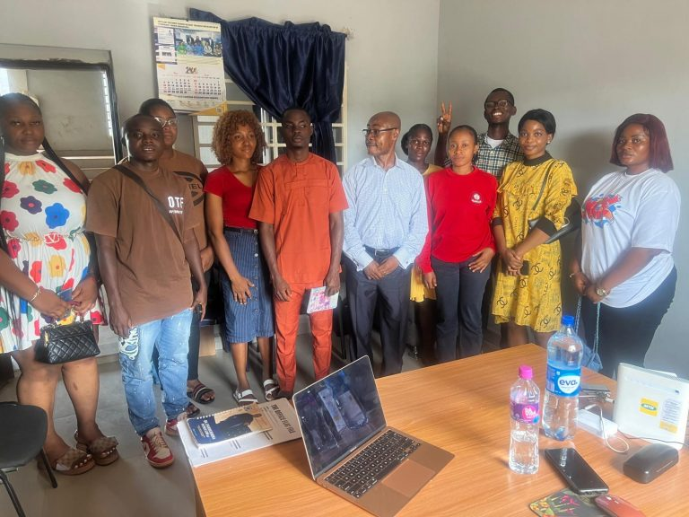

Digital and Media Literacy
Helping people navigate information with confidence.
MEDIA builds practical skills for finding, questioning, creating, and sharing information in a rapidly changing digital world.
In April 2008, the US-based Knight Foundation convened the Commission on the Information Needs of Communities in a Democracy to examine the information needs of American communities in the digital age and to suggest recommendations to strengthen the free flow of information. Eighteen months later, the 17-man commission of media, policy, and community leaders published its report entitled “Informing Communities: Sustaining Democracy in the Digital Age,” with 15 recommendations to better meet community information needs.
Inspired by the Knight Foundation study, MEDIA seeks to replicate similar research in African democracies through its digital and media literacy programs. Through its activities among higher educational institutions and public outreach to experts and community members at public forums, MEDIA will continue to explore the following questions:
- What are the information needs of a community in a democracy?
- How is technology affecting the information needs of democracy in African countries?
- What public policy options would help to minimize digital exclusion?
The time to bring digital and media literacy into the mainstream of African communities is now. People need the ability to access, analyze and engage in critical thinking about the array of messages they receive and send to make informed decisions about the everyday issues they face regarding health, work, politics and leisure. In an age of information overload, people need to allocate the scarce resource of human attention to quality, high-value messages that have relevance to their lives.
The full participation in contemporary democracies requires not just consuming messages but also creating and sharing them. To fulfill the promise of digital citizenship, Africans must acquire multimedia communication skills that include the ability to compose messages using language, graphic design, images, and sound, and know how to use these skills to engage in the civic life of their communities. These competencies must be developed in formal educational settings, especially in higher education, as well as informal settings. The inclusion of digital and media literacy in formal education can be a bridge across digital divides and cultural enclaves, a way to energize learners and make connections across subject areas, and a means for providing more equal opportunities in digital environments.
Media Education Development Initiatives Africa invites you to join the public dialogue on digital inclusion, netizenship, critical thinking, and media literacy.

Be part of the change
Empower media literacy. Defend press freedom. Support ethical journalism — as a volunteer, donor, or advocate.